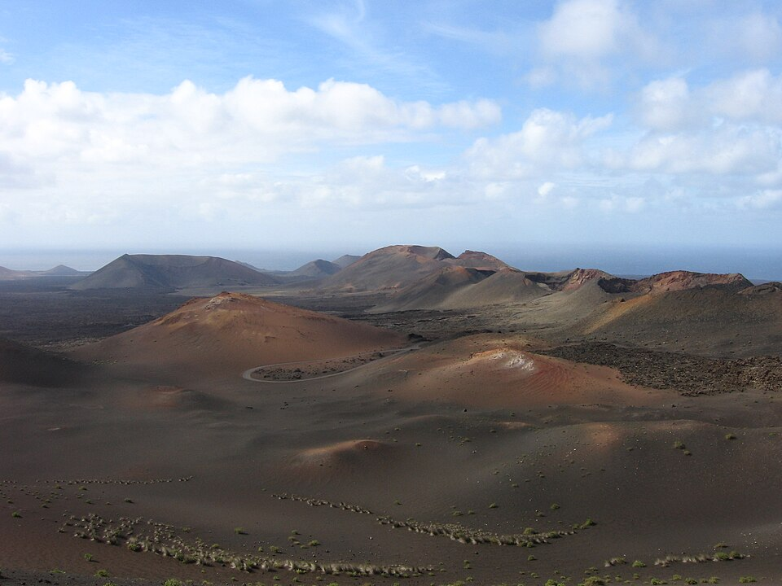
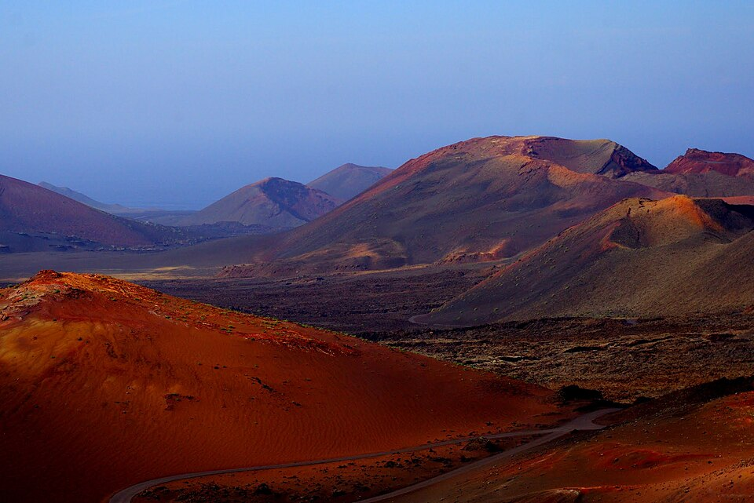
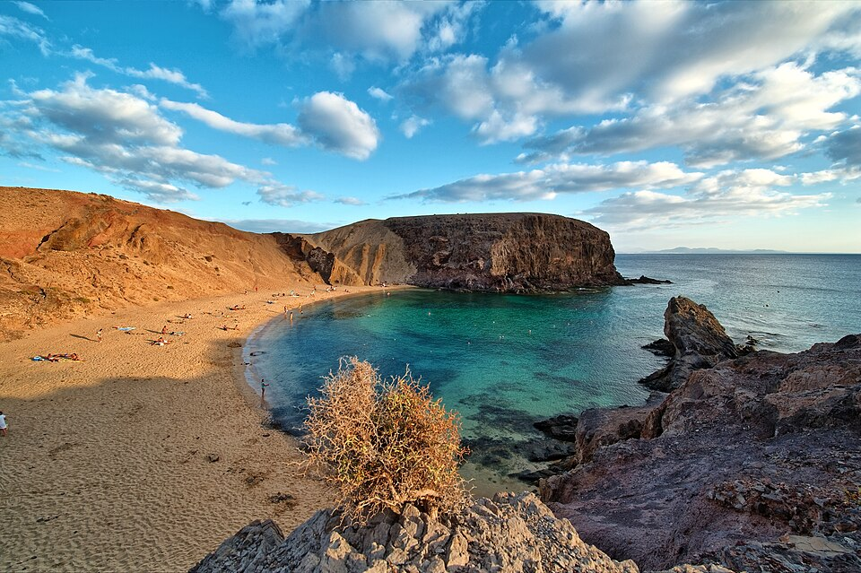
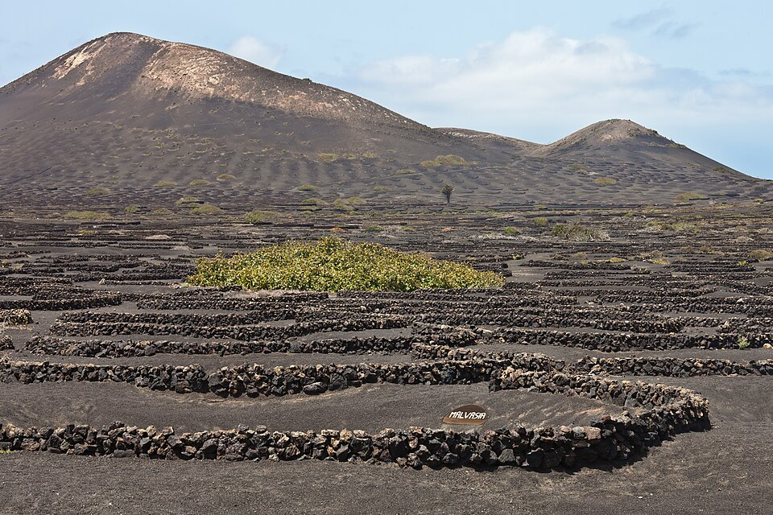
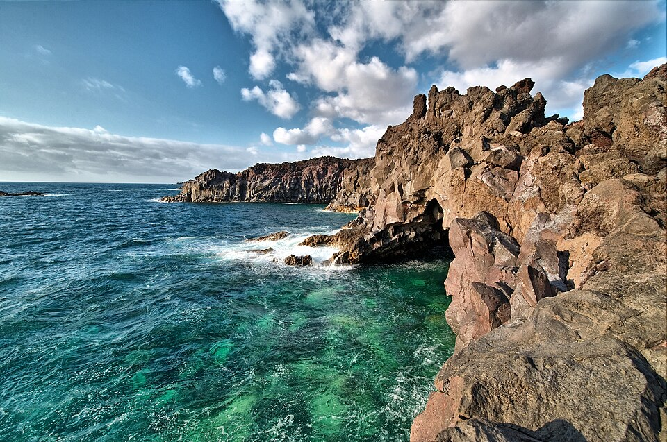

Repaso de la Tanda LZ1
Lanzarote, primer destino nuevo (parte 1 de 2): lo atado a Roma, los datos, los tiempos en coche con Mapbox y Civitatis en español. Lanzarote sigue OCULTO (solo administrador); Roma no cambia. Marca cada punto en tu teléfono cuando lo hayas comprobado (se guarda en este navegador). Abajo, las portadas candidatas para que elijas.
0 · Antes de empezar ✅ Hecho — Los 14 archivos de Lanzarote están en docs/destinos/lanzarote/; prompt guardado tal cual (llegó entero, acaba en «reinicia el api-server»); nota de estado cada 30 minutosLanzarote oculto (solo administrador); Roma no cambia: muestra de 60 fechas idéntica y pruebaJutrip en 0 tras los cambios del servidor y del motor. Se interrumpieron dos agentes por el límite de uso de la sesión y se reanudaron sin perder trabajo. Dónde: No es de móvil. 1 · Lo atado a Roma ✅ Hecho — Lanzarote de mentira revisado: qué da por hecho Roma, qué se ha cambiado y qué queda para la LZ2No se pudo cargar un Lanzarote de mentira completo por el motor (los datos reales los montaba otro agente a la vez); se hizo un barrido de todos los textos y valores de Roma escritos a mano en server/, shared/ y src/, con un `data` de mentira (Roma + Lanzarote) y un Express propio. ARREGLADO (en Roma dicen lo mismo palabra por palabra): zona horaria `Europe/Rome` escrita a mano en 3 sitios del móvil (ahora sale del destino: Roma `Europe/Rome`, Lanzarote `Atlantic/Canary`); alias del destino en `routeAlgorithm.js`; la lista de ciudades de Civitatis (estaba fija a Roma, ahora lee todos los `data/civitatis/*.json`); el reconocimiento del Free Tour («Free Tour por/de/en X»); textos del servidor y del motor con el nombre del destino («vuelve a X: no te da tiempo», «Pasar este día a X», «Otro día de tu viaje a X»…); textos del móvil con el destino del viaje (interruptor del día 4, «Si cambias a…», «Volver a…», «restaurantes de…», «Leer documentos es parte del Pase…»). Ya venían de los datos: líneas de transporte, aeropuertos (ACE ya estaba), `_llegada.json` y el nombre del pase («Pase <destino>»); el precio del pase es el mismo en todos los destinos. Dónde: No es de móvil. ✅ Hecho — Lanzarote oculto: solo lo ve el administrador; nadie más puede elegirloLa lista de destinos (`/api/destinos-curados`) solo incluye Lanzarote si quien pide es administrador (mismo mecanismo que la API de Civitatis; la lista pública se cachea con `Vary: Authorization`). Además, un guardián único (`server/destinoOculto.js`, montado antes de TODAS las rutas /api) responde 404 «Not found» a cualquier petición que mencione Lanzarote (en `destination`, `destino`, `city`, `destinationName`, en el cuerpo, la consulta o dentro de `route`, `answers`, `trip`) si quien pide no es administrador: no llega al motor ni a Claude y no revela que existe. Con administrador pasa igual. Comprobado con petición real: generate-skeleton y curated-places-pool con Lanzarote → 404. Roma y «Romania» pasan. Variable `DESTINOS_OCULTOS=` vacía para abrirlo a todos. No probado en vivo con una cuenta de administrador real (cubierto con un permiso de mentira en la prueba). Dónde: Pedir /api/destinos-curados o generate-skeleton con y sin sesión de administrador. ⚠️ A medias — Lo que queda para la LZ2(a) Contenido de Roma dentro de la interfaz que no es destino: DayMenu («Pompeya, Florencia, la Costa Amalfitana…»), ExplorePanel (Nasoni, Trattoria, baños, fuentes: en Lanzarote van gasolineras y aparcamientos), ListaDelPase y HoySinPase (frases de Design con Vaticano y catacumbas), ejemplos en gris de campos («Via Cavour 12, Roma», «Ciampino»), `insideSwitch.js` y `llegadaDia1.js`. (b) Lo de LANZAROTE_PARA_CODE.md que no existe en el motor: trayectos en coche (hoy a pie o «taxi»), ida y vuelta desde el alojamiento, rato de aparcar, tope de coche por día, sin paseo nocturno, «¿Vas a moverte en coche?». (c) `listasTrip.js` toma los meses de invierno de `destination_config.context_banners.meses_invierno` (por defecto los de Roma): Lanzarote necesita ese campo, y `excursion_interruptor` para el interruptor del día 4. (d) `civitatis_city ?? 'roma'` en index.js (poner `excursions.civitatis_city` en Lanzarote; ojo: en Lanzarote la ciudad cambia POR EXCURSIÓN) y `DESTINOS_CON_LOGROS = ['roma']`. Dónde: No es de móvil. 2 · Los datos de Lanzarote ✅ Hecho — Sitios con nombre, zona, coordenadas en su aparcamiento, horario con fuente y fecha, precio, duración, ver_por, carrito, nivel y reserva solo online34 sitios en `data/pipeline_v2/lanzarote.json` (11 zonas) y los días de DIAS_CURADOS en `data/dias/lanzarote/listas.json` SOLO como datos (el motor aún no los lee; sus variantes llevan `cuando` y `ops: null`). Cada horario lleva `hours_audit` (confianza, fuente, fecha 2026-11-02) y `verificar` en todo lo marcado ⚠️: Timanfaya (09:00 oficial vs 09:30), turnos de la Cueva, cierre de la Fundación (17:30 vs 18:00), Casa-Museo de Haría (10:00 vs 10:30), Santa Bárbara, LagOmar, Papagayo, El Golfo y Hervideros (gratis sin confirmar), días de la Bodega La Geria, Mirador de los Helechos y accesos de Las Grietas, Bosquecillo y Caletón Blanco (blogs). Timanfaya y la Cueva: reserva obligatoria solo online con día y hora, llegada 15 min antes. Sin carrito: Jameos y Cueva (difícil: Timanfaya y Mirador del Río). Aviso de pistas de tierra en Papagayo, Las Grietas y el Bosquecillo. Dónde: data/pipeline_v2/lanzarote.json (no es de móvil). ⚠️ A medias — Decisiones tuyas pendientes en los datos(1) `joyas` del destino es PROVISIONAL (Timanfaya, Jameos y Fundación, una por día curado): el documento nombra más joyas por día. (2) Mapeo de la pirámide mío: Imprescindibles = nivel 1, «Nivel 1» del documento = nivel 2, «Nivel 2» = nivel 3. ¿Los «Nivel 1» deberían ser nivel 1 también? (3) Caldera Blanca usa la coordenada de Mancha Blanca (no tiene punto propio). (4) Charco del Palo (nudista) y Museo Atlántico están solo en EXPLORAR (`lugares_solo_lista`), no en la ruta. Dónde: No es de móvil. ✅ Hecho — Zona horaria Atlantic/Canary, atardeceres con sunset.js y cortes de luzSol de 17:56 a 20:57 durante el año; por estación: invierno 18:20, primavera 20:05, verano 20:45, otoño 19:10; cortes de luz 18:40 / 19:25 / 20:10 (cuatro partes iguales, como DIAS_ESCRITOS_FORMATO.md). Comprobado: 8-nov ~18:05, 21-dic ~18:00, 21-jun ~20:55, 20-mar ~19:05. Dónde: No es de móvil. ⚠️ A medias — «Cerca de mí» con gasolineras y aparcamientosDatos hechos: 48 gasolineras (OpenStreetMap, ODbL, descargadas el 3-nov) y 147 aparcamientos públicos; en el norte solo 1-4 gasolineras, con aviso («pocas en Haría y Arrieta»). FALTA el código que los lea: hoy la app lee `data/pipeline_v2/banos/<destino>.json`; cablearlo es de la LZ2. Dónde: No es de móvil. ⚠️ A medias — Foto de portada de Lanzarote: elige una bonita con licencia libre y su créditoCinco candidatas en la parte de abajo de este REPASO, con su autor y licencia (CC BY-SA 3.0 todas las de Commons). Puesta por defecto la 1 (Timanfaya, campo de volcanes, de rgmz) en `src/lib/portadaViaje.ts`; Roma intacta. Mi recomendación: la 4 (La Geria, viñedos en hoyos de ceniza) o la 3 (Papagayo). Dime cuál y la cambio. Dónde: REPASO_LZ1.html, abajo. ⚠️ A medias — Fotos de los sitios con licencia libre y su crédito; cuáles faltan33 fotos de Wikimedia Commons (1 portada + 32 sitios; solo CC0, CC BY y CC BY-SA, con autor, licencia y enlace) en `public/fotos/lanzarote/` y `data/dias/lanzarote/_fotos.json`. Elegidas por el título del fichero y la miniatura: conviene que mires las del Mirador del Río, el Castillo de San José y La Graciosa. Falta el Mirador del Bosquecillo (no hay foto libre con ese nombre). Fuerteventura y la Isla de Lobos usan la foto de su excursión de Civitatis. Dónde: public/fotos/lanzarote/. 3 · Los tiempos en coche ✅ Hecho — Tabla de coche de Mapbox entre todas las paradas, las 6 zonas de alojamiento y el aeropuerto, con el rato de aparcar49 × 49 puntos (43 paradas + 6 zonas y el aeropuerto; minutos y metros en los dos sentidos), sin tráfico, 0 huecos (`data/pipeline_v2/travel/lanzarote_coche.json`). Una parada = un sitio donde aparcas (pueblos como una parada). Rato de aparcar: 5 min por defecto, Timanfaya y Mirador del Río 10, Papagayo 20, Teguise 5 (15 en domingo). 12 paradas llevan coordenada aproximada (`verificar`: bodegas de La Geria, Caletón Blanco, Las Grietas, Ciudad Estratificada, Helechos, Marina Rubicón, Montaña Bermeja…), con ±3 min de margen. La coordenada del aeropuerto la corregí tras comprobar que la primera daba 24 min a Puerto del Carmen y la buena 12. Dónde: data/dias/lanzarote/_paradas.json (no es de móvil). ✅ Hecho — Comparación con los tiempos de los documentos: los que no cuadran36 trayectos comparados: cuadran 29 y 7 no (±5 min o ±20 %). No cuadran: Teguise → Cueva de los Verdes (doc 21, Mapbox 27); Mancha Blanca → Caleta de Famara (20 / 29); Playa Blanca → Costa Teguise (36 de Wanderlog, poco fiable / 48); Campesino → La Geria (20 / 14); Teguise → Mirador de Haría (35 por la vuelta de Las Nieves / 17 en directo); Famara → La Garita (25 ⚠️ / 36); Mancha Blanca → Timanfaya (7 era solo hasta la entrada del parque / 16). En los trayectos largos al norte Mapbox sale 5-11 min más lento que rome2rio (Playa Blanca → Jameos 66 frente a 55; → Mirador del Río 73 frente a 68; Puerto del Carmen → Órzola 49 frente a 43). Los totales de coche de los propios documentos sí se confirman (D1 desde Costa Teguise 2 h 35; D2 desde Playa Blanca 2 h 51 frente a 2 h 35-2 h 55…). Papagayo (pista de tierra) queda por medir en el sitio: Mapbox da 19 min desde Playa Blanca, dentro de los 15-20 estimados. Dónde: data/dias/lanzarote/_comparacion_tiempos.json. ✅ Hecho — Informe de cada día con los tiempos de Mapbox, desde las 6 zonas: coche total (tope 3 h), llegar a cada sitio antes de su última entrada o su turno, comida antes de las 15:00`docs/destinos/lanzarote/INFORME_DIAS_MAPBOX.md`, un informe por día en sencillo; no se ha cambiado ningún día. Resumen (invierno, atardecer 18:05): D1 sur volcánico CABE desde las 6 zonas (2 h 02 a 2 h 59 de coche); D2 norte de Manrique CABE desde las 6 (1 h 15 a 2 h 51), también sábado, viaje de 2 días, la Cueva primero y el viernes con las Noches de Jameos; D3 Manrique en casa NO CABE ENTERO desde ninguna zona: con los dos opcionales (Castillo de Santa Bárbara y Ciudad Estratificada) a la Casa-Museo del Campesino se llega hacia las 17:21 y cierra a las 18:00 (la visita dura 50 min); sin los opcionales cabe desde todas (1 h 05 a 2 h 13) y el domingo también; D3 con Arte (LagOmar) igual (Teguise dura 90 min en el cálculo y el documento lo da hasta las 15:30, unos 10 min menos); D4 Papagayo y Playa Blanca NO CABE desde El norte (3 h 09, sale a las 07:34), desde las otras cinco sí (1 h 23 a 2 h 44); D5 volcanes y Famara CABE desde las 6; La Graciosa CABE (con coche hasta Órzola, ferry de las 10:00 y vuelta de las 17:00). La comida empieza antes de las 15:00 en todos los días y variantes. Con el rato de aparcar sumado, D3 desde Playa Blanca llega a 3 h 12. Puse yo la «última entrada» del Campesino a las 17:10 (cierra a las 18:00 y la visita dura 50 min). Dónde: docs/destinos/lanzarote/INFORME_DIAS_MAPBOX.md. 4 · Civitatis en Lanzarote ✅ Hecho — Excursiones y Free Tours en español: enlace bueno, nombre, precio en euros, nota, opiniones, duración y cancelación, con «comprobado»Comprobado el 3-nov-2026 en el navegador con las páginas /es/ (Civitatis no bloqueó): 23 excursiones y 2 Free Tours en `data/dias/lanzarote/_civitatis.json`, con enlace en español SIN código (la app le pone el código y la campaña al pulsar, como en Roma). Diferencia con Roma: allí hay una sola ciudad de Civitatis; en Lanzarote cambia por excursión (arrecife, playa-blanca, puerto-del-carmen, tinajo, yaiza…): cada una lleva `civitatis_ciudad` y `civitatis_slug`. Corregidos slugs de los borradores (kayak y yate de Papagayo, delfines, Volcán, Janubio, submarino). Notas ya confirmadas: Tour de César Manrique 8,5 (228), Fuerteventura 7,2 (488), Lobos 8,5 (56), Dunas 7,7 (32). Precios «desde»: Tour completo 88 €, Timanfaya + Jameos 87 €, sur 65 €. El Free Tour de Arrecife existe y está activo (9,1/10, 2.592 opiniones). Dónde: data/dias/lanzarote/_civitatis.json. ✅ Hecho — Free Tour de Teguise (y Arrecife): días y horasTeguise: martes y jueves a las 11:00 (un lunes suelto, el 16-nov-2026, a las 16:00); punto de encuentro: estatua de D. Leandro Perdomo Spínola; 2 h; reservable hasta 1 h 30 antes. Arrecife: lunes, miércoles y viernes a las 11:00, martes y jueves a las 17:00, el sábado solo en verano 2027 (10:00 de junio a agosto, 11:00 en septiembre); encuentro en la Casa de la Cultura Agustín de la Hoz, termina en el Esqueleto de Ballena. Calendario de la web del 5-nov-2026 a mayo de 2027 (Teguise) y a octubre de 2027 (Arrecife); salen del calendario de la web, no de la API. Dónde: data/dias/lanzarote/_civitatis.json. ⚠️ A medias — Con la API (sandbox): si resuelven y con qué númeroResuelven 2 de 25, igual que en Roma: Senderismo Volcanes = 33778 y Excursión privada = 135260. El resto da `no_encontrado` y los Free Tour de Lanzarote no están en el sandbox. El destino Lanzarote del sandbox es el 134 y no tiene actividades propias (las cuelgan Arrecife 4320, Costa Teguise 4323, Playa Blanca 4324, Puerto del Carmen 4325, Tinajo 4328, Yaiza 4330 y Teguise 4360). Sin confirmar (`verificar`): recogida en el hotel del Tour de César Manrique y del yate de Papagayo, el buggy (180 € puede ser por buggy), la excursión privada (700 € es por grupo) y las notas de Norte, Fuerteventura y Delfines (de la lista general). Dónde: data/civitatis/lanzarote_resolver.json. 5 · La prueba ✅ Hecho — Muestra de 60 fechas de Roma idéntica; pruebaJutrip en 0; pruebaTandaLZ1 con todo lo anteriorVer el informe. Dónde: No es de móvil. Portada de Lanzarote: elige una Cinco candidatas con licencia libre y su crédito. La elegida por defecto es la 1; mi recomendación, la 4 (La Geria) o la 3 (Papagayo).

Opción 1 · Timanfaya: campo de volcanes (la elegida por defecto)
Opción 2 · Paisaje lunar rojo de Timanfaya
Opción 3 · Playa de Papagayo (cala con agua turquesa)
Opción 4 · La Geria: viñedos en hoyos de ceniza negra
Opción 5 · Los Hervideros: lava y mar turquesaSitios sin foto libre {"lugar":"Mirador del Bosquecillo (Risco de Famara)","motivo":"En Commons no hay una foto con ese nombre y licencia libre; no se pone una de «Risco de Famara» a ojo."} Los días con los tiempos de Mapbox Un informe por día, medido desde las 6 zonas de alojamiento, en docs/destinos/lanzarote/INFORME_DIAS_MAPBOX.md. Resumen: todos los días caben salvo el día 3 completo (la Casa-Museo del Campesino se alcanza a las 17:21 y cierra a las 18:00, con los dos opcionales) y el día 4 desde El norte (3 h 09).
Todas las capturas